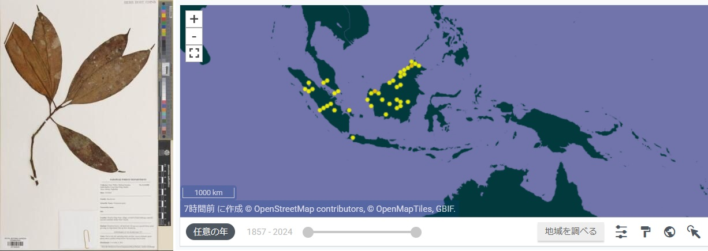
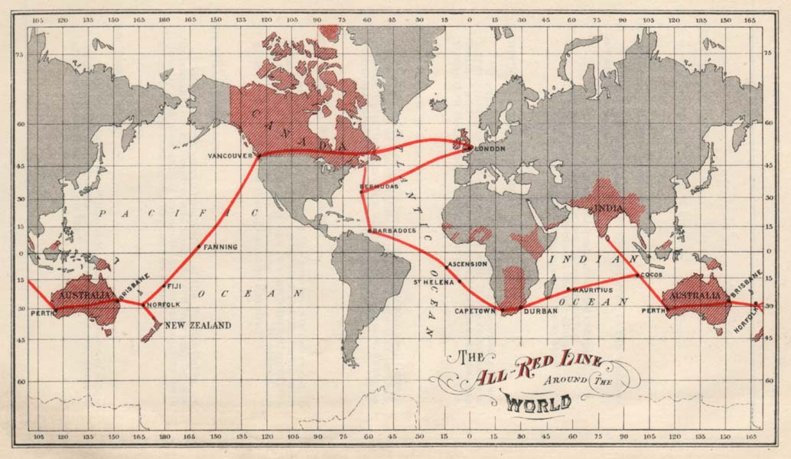
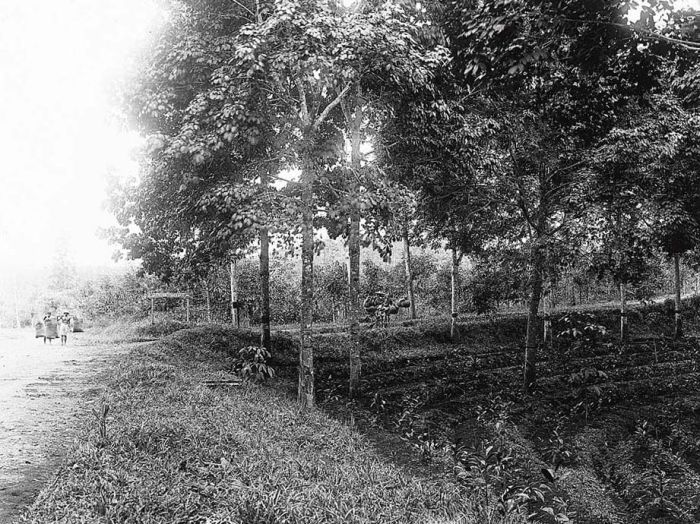

帝国のグローバル通信インフラと熱帯作物利権
ー熱帯雨林へのレガシー・フットプリント
2025 6月2日
執筆者：五十里翔吾
社会の資本の流れをネイチャーポジティブな方向にシフトさせることを目的として、企業の自然資本との接点をリスクや機会の観点から情報開示することを義務づけるTNFD（自然関連財務情報開示タスクフォース）と呼ばれる国際的フレームワークが運用されるようになりました。
自然との接点が明らかな一次産業セクターに対して、情報通信サービス・インフラを提供する企業における自然との接点は、あまり明確に認識はされていません。事業タイプごとに自然への影響と依存をデータベース化したツールであるENCOREにおいても、スコアがModarete（中程度）を上回る項目は光・音による攪乱（影響）と、暴風雨の抑制（依存）に限られます。
しかし、世界に広がる通信インフラの歴史を語る上で、帝国列強による東南アジアにおける自然資本利権を見過ごすことはできません。本メルマガでは、熱帯樹木がグローバルな通信インフラの構築に果たした役割を掘り下げます。
奇跡の材料「グッタペルカ」
マレー、スマトラ、ボルネオに産するアカテツ科の樹木グッタペルカ (Palaquium gutta) の乳液からは、天然ゴムに類似する、水中でほとんど変質しないという特殊な性質を持つ絶縁物質が得られます。この物質は19世紀末に西洋に広く知られることとなり、ユニークな性質に着目したヴェルナー・フォン・ジーメンス（当時ロンドンで勤務、SI単位「ジーメンス」に名を残す工学者）によって、被覆導線への応用が確立されました。
Palaquium gutta の標本画像と分布データ：画像はGBIFより

この発明を実用化し、海底ケーブルによる優先通信インフラを構築したのが、当時マレー・ボルネオを植民地支配していたパクス・ブリタニカ＝イギリス帝国です。イギリスは大西洋横断ケーブル（1866年）、ロンドン―インド間（1870年）、太平洋横断ケーブル（1902年）を次々に敷設しました。世界中の植民地をつなぐこの情報通信網（All Red Line）は、帝国イギリスの圧倒的な力を具現化したグローバルインフラとなりました。情報通信路を支配したイギリスは、後続の国々の通信を傍受でき、これが軍事上の優位にもつながっていました。
こうした情報的支配を可能にしたのは、グッタペルカのサプライチェーンを独占できたイギリス帝国の「地の利」でした。
大英帝国の All Red Line

野生個体の収奪的伐採からプランテーションへ、そして化学的代替品の台頭
19世紀末までに、グッタペルカの年間需要量は3000トンを超えたと言われています。年間100万にも及ぶ野生個体が伐採され、個体数が激減しました。当時の生産は、現地住民らによる専門知識を必要としており、従来の植民地型の管理型栽培は容易には実現しなかったとされています。
プランテーションによるグッタペルカ生産は、1900年に入ってからようやく可能になりましたが、これらは当然、現地の熱帯林を伐採して作られたものでした。20世紀初頭におけるグッタペルカ収量はヘクタールあたり300kg程度と見積もられており、したがって需要を満たすためには1万ha程度のプランテーションが必要だった計算になります。現在の1000万haを超える規模の熱帯作物のプランテーションに比べるとその規模は非常に小さいものですが、産業基盤としての熱帯作物生産の草分けであったとともに、後に天然ゴム、アブラヤシへと続く、農地開発のための熱帯林伐採の最初期の事例だったと言えます。
グッタペルカ生産の様子 Collectie Wereldmuseum (v/h Tropenmuseum), part of the National Museum of World Cultures (CC-BY-SA)

現在では、海底ケーブルの絶縁材料はポリエチレンによって代替されています。グッタペルカの主たる利用の場は歯科医院に移り、根管充填剤として広く利用されています。歯科医師以外にとっては、「忘れられた天然資源」となったのです。
おわりに
私たちの生活を支える情報通信ネットワークは、実際には自然資本との非常に深い関わりを持つことが、その歴史から見えてきます。現在でも、海底ケーブルは海を越えた情報通信になくてはならないものです。昨今ではこうした物理的インフラが生物の生息地に与える影響の評価も実施されるようになりました（沖縄セルラー電話社の例）。個社と自然資本の接点を分析する上では、このような人類史的視点も必要だと言えるでしょう。
熱帯有用作物をめぐる、植民地支配を背景とした列強による熱帯作物生産は、生物多様性条約における遺伝資源の利用と利益分配に関する、先進国と途上国の間での激しい対立の伏線にもなっています。本稿で紹介した、有用天然資源の収奪的利用による野生個体の減少、そしてプランテーションによる大規模生産、そして化学的な代替品目による置き換わりという一連のプロセスは、列強による熱帯有用植物利用史における一つの典型的事例であると言えます。南米産のキナノキ属 (Cinchona) から分離されるマラリアの特効薬であるキニーネも、このような歴史をたどりました。
2020年代以降、鉱物、エネルギー資源を取り巻くサプライチェーンの安定性が、米国、ロシア、中国を中心とした国際情勢の不安定化によって脅かされています。このように、自然資本の地理的局在性は、国際社会の地政学的なパワーバランスを左右する要因であり続けるでしょう。
参考文献
- Headrick, D. R. (1987). Gutta-Percha: A Case of Resource Depletion and International Rivalry. IEEE Technology and Society Magazine, 6(4), 12–16.
- Tully, J. (2009). A Victorian ecological disaster: Imperialism, the telegraph, and gutta-percha. Journal of World History, 559-579.
- Sanzo, K. (2023). Around the Wire: Telegraphic Infrastructure and Gothic Energies in Late Victorian Britain. 19: Interdisciplinary Studies in the Long Nineteenth Century, 2023(35).